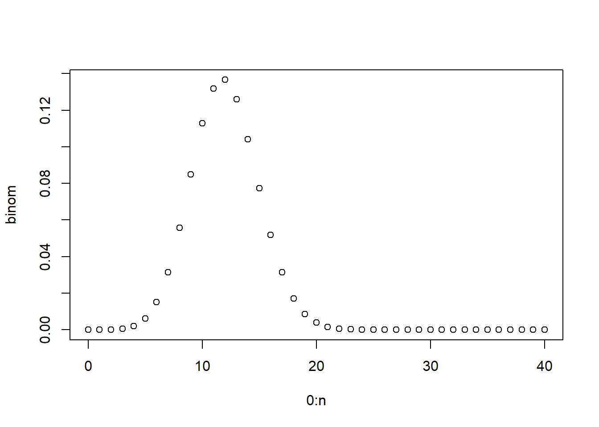
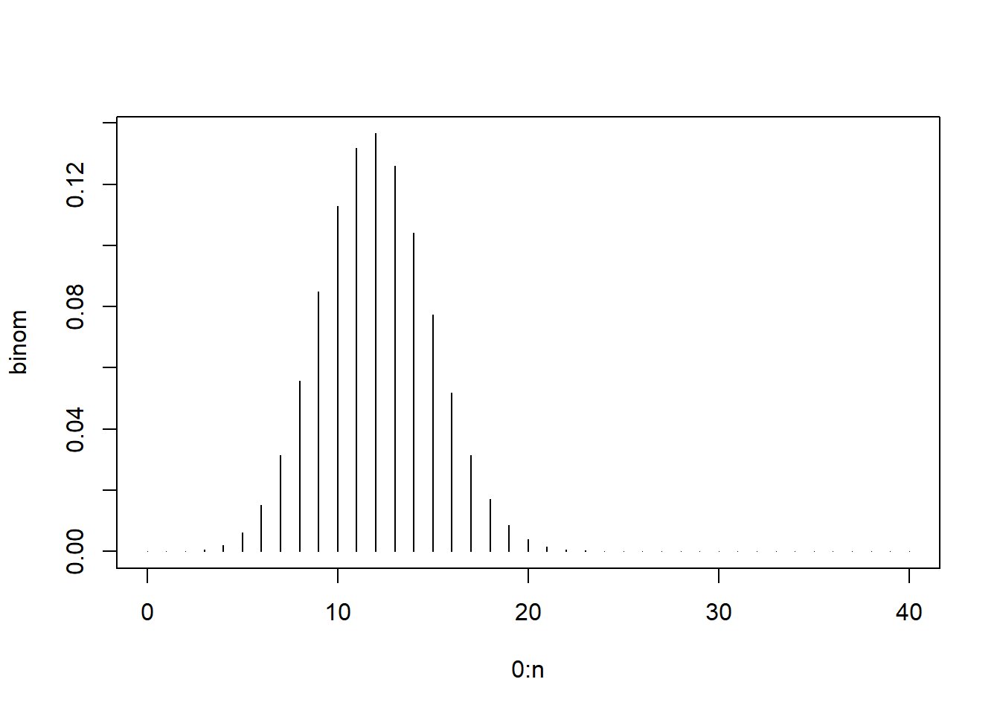
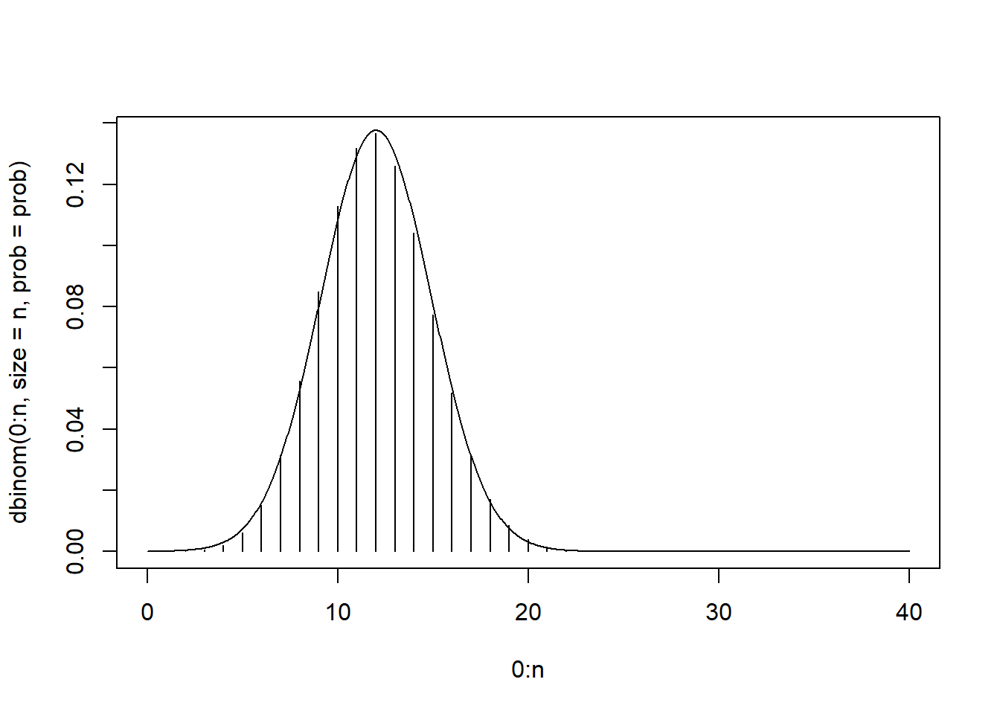
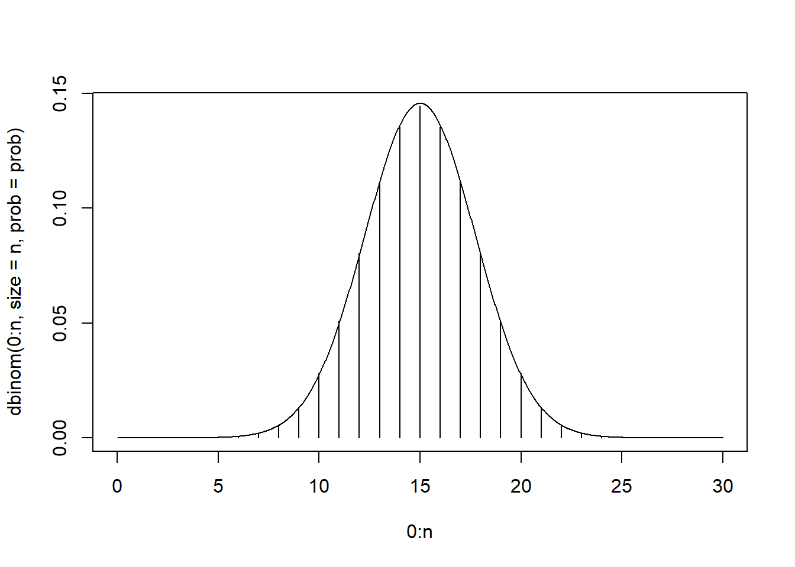
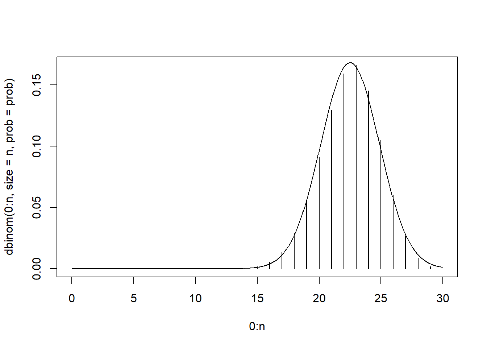
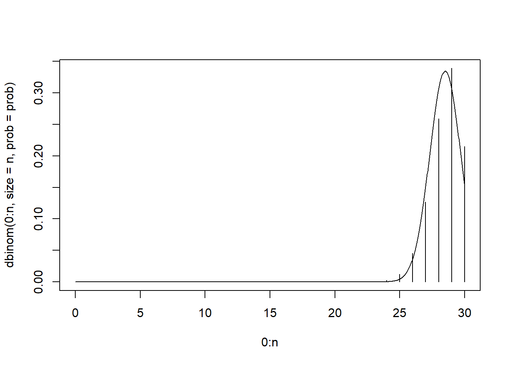
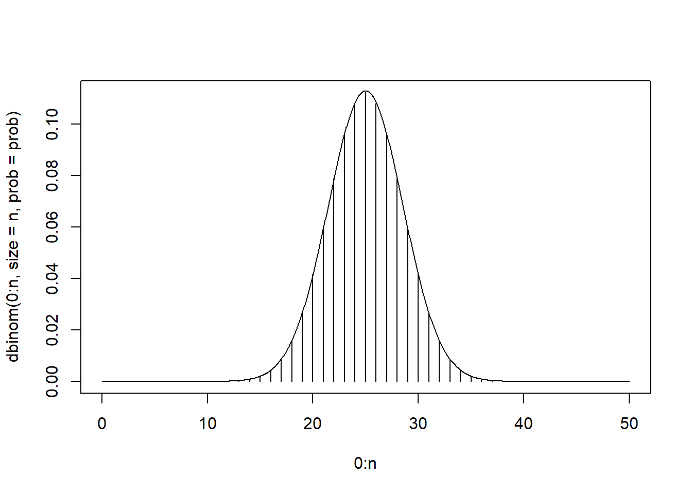
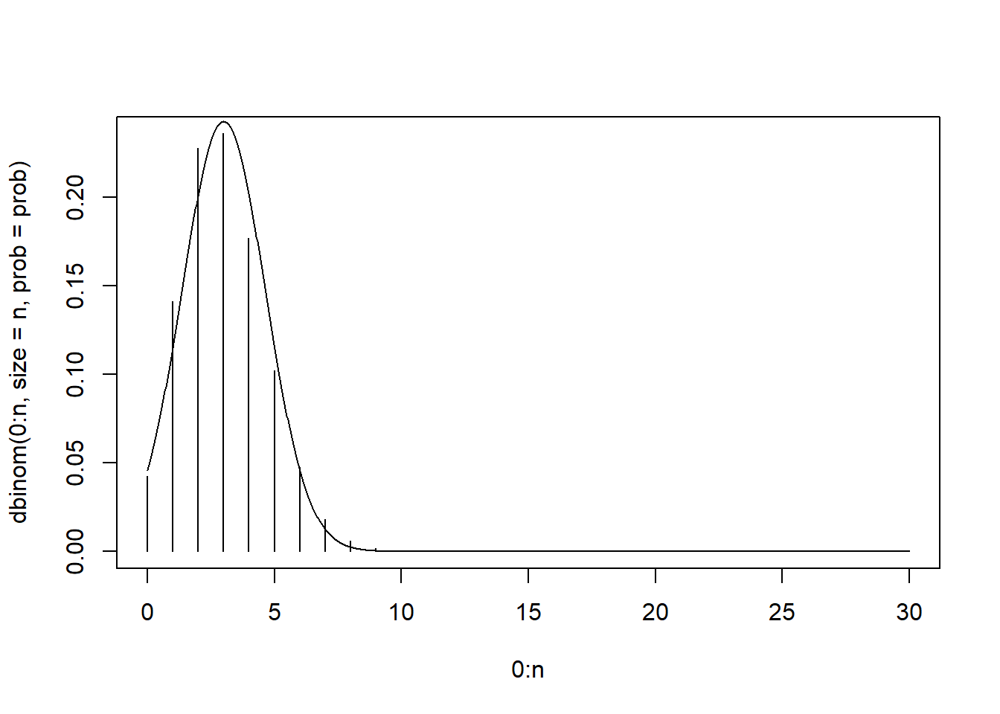

set.seed(12)
my_unif <- runif(30)
is.vector(my_unif)[1] TRUEset.seed(12)
my_unif <- runif(30)
is.vector(my_unif)[1] TRUEmy_unif[1:10] [1] 0.069360916 0.817775199 0.942621732 0.269381876 0.169348123 0.033895622
[7] 0.178785004 0.641665366 0.022877743 0.008324827#create indexing vector
my_unif[c(1:3, 15:17)][1] 0.06936092 0.81777520 0.94262173 0.26491838 0.43933432 0.45760715#sort (from smallest to largest)
sort(my_unif) [1] 0.008324827 0.022877743 0.033895622 0.069360916 0.097853040 0.112698938
[7] 0.169348123 0.178785004 0.188586927 0.217823043 0.218367168 0.264918378
[13] 0.267943593 0.269381876 0.376248455 0.380812184 0.392697197 0.439334316
[19] 0.439429325 0.457607151 0.504767952 0.540707547 0.641665366 0.665679830
[25] 0.669819296 0.709830466 0.787836347 0.813880559 0.817775199 0.942621732#create and sort character vector (sorts alphabetically and then by number)
char_vec <- c("da1", "ad1", "c2", "Ce1")
sort(char_vec)[1] "ad1" "c2" "Ce1" "da1"#sequences
seq(1, 10, 2)[1] 1 3 5 7 9seq(1:10) [1] 1 2 3 4 5 6 7 8 9 101:10*2 [1] 2 4 6 8 10 12 14 16 18 201:15/2 [1] 0.5 1.0 1.5 2.0 2.5 3.0 3.5 4.0 4.5 5.0 5.5 6.0 6.5 7.0 7.5my_iris <- as.matrix(iris[, 1:4])
str(iris)'data.frame': 150 obs. of 5 variables:
$ Sepal.Length: num 5.1 4.9 4.7 4.6 5 5.4 4.6 5 4.4 4.9 ...
$ Sepal.Width : num 3.5 3 3.2 3.1 3.6 3.9 3.4 3.4 2.9 3.1 ...
$ Petal.Length: num 1.4 1.4 1.3 1.5 1.4 1.7 1.4 1.5 1.4 1.5 ...
$ Petal.Width : num 0.2 0.2 0.2 0.2 0.2 0.4 0.3 0.2 0.2 0.1 ...
$ Species : Factor w/ 3 levels "setosa","versicolor",..: 1 1 1 1 1 1 1 1 1 1 ...attributes(my_iris)$dim
[1] 150 4
$dimnames
$dimnames[[1]]
NULL
$dimnames[[2]]
[1] "Sepal.Length" "Sepal.Width" "Petal.Length" "Petal.Width" dim(my_iris)[1] 150 4head(iris) Sepal.Length Sepal.Width Petal.Length Petal.Width Species
1 5.1 3.5 1.4 0.2 setosa
2 4.9 3.0 1.4 0.2 setosa
3 4.7 3.2 1.3 0.2 setosa
4 4.6 3.1 1.5 0.2 setosa
5 5.0 3.6 1.4 0.2 setosa
6 5.4 3.9 1.7 0.4 setosastr(iris)'data.frame': 150 obs. of 5 variables:
$ Sepal.Length: num 5.1 4.9 4.7 4.6 5 5.4 4.6 5 4.4 4.9 ...
$ Sepal.Width : num 3.5 3 3.2 3.1 3.6 3.9 3.4 3.4 2.9 3.1 ...
$ Petal.Length: num 1.4 1.4 1.3 1.5 1.4 1.7 1.4 1.5 1.4 1.5 ...
$ Petal.Width : num 0.2 0.2 0.2 0.2 0.2 0.4 0.3 0.2 0.2 0.1 ...
$ Species : Factor w/ 3 levels "setosa","versicolor",..: 1 1 1 1 1 1 1 1 1 1 ...attributes(iris)$names
[1] "Sepal.Length" "Sepal.Width" "Petal.Length" "Petal.Width" "Species"
$class
[1] "data.frame"
$row.names
[1] 1 2 3 4 5 6 7 8 9 10 11 12 13 14 15 16 17 18
[19] 19 20 21 22 23 24 25 26 27 28 29 30 31 32 33 34 35 36
[37] 37 38 39 40 41 42 43 44 45 46 47 48 49 50 51 52 53 54
[55] 55 56 57 58 59 60 61 62 63 64 65 66 67 68 69 70 71 72
[73] 73 74 75 76 77 78 79 80 81 82 83 84 85 86 87 88 89 90
[91] 91 92 93 94 95 96 97 98 99 100 101 102 103 104 105 106 107 108
[109] 109 110 111 112 113 114 115 116 117 118 119 120 121 122 123 124 125 126
[127] 127 128 129 130 131 132 133 134 135 136 137 138 139 140 141 142 143 144
[145] 145 146 147 148 149 150iris[1:4, 2:4] Sepal.Width Petal.Length Petal.Width
1 3.5 1.4 0.2
2 3.0 1.4 0.2
3 3.2 1.3 0.2
4 3.1 1.5 0.2iris[1, ] Sepal.Length Sepal.Width Petal.Length Petal.Width Species
1 5.1 3.5 1.4 0.2 setosairis[1,, drop = FALSE] Sepal.Length Sepal.Width Petal.Length Petal.Width Species
1 5.1 3.5 1.4 0.2 setosa`[`(iris, 1, , drop = FALSE) Sepal.Length Sepal.Width Petal.Length Petal.Width Species
1 5.1 3.5 1.4 0.2 setosadata(trees)
trees Girth Height Volume
1 8.3 70 10.3
2 8.6 65 10.3
3 8.8 63 10.2
4 10.5 72 16.4
5 10.7 81 18.8
6 10.8 83 19.7
7 11.0 66 15.6
8 11.0 75 18.2
9 11.1 80 22.6
10 11.2 75 19.9
11 11.3 79 24.2
12 11.4 76 21.0
13 11.4 76 21.4
14 11.7 69 21.3
15 12.0 75 19.1
16 12.9 74 22.2
17 12.9 85 33.8
18 13.3 86 27.4
19 13.7 71 25.7
20 13.8 64 24.9
21 14.0 78 34.5
22 14.2 80 31.7
23 14.5 74 36.3
24 16.0 72 38.3
25 16.3 77 42.6
26 17.3 81 55.4
27 17.5 82 55.7
28 17.9 80 58.3
29 18.0 80 51.5
30 18.0 80 51.0
31 20.6 87 77.0class(trees)[1] "data.frame"str(trees)'data.frame': 31 obs. of 3 variables:
$ Girth : num 8.3 8.6 8.8 10.5 10.7 10.8 11 11 11.1 11.2 ...
$ Height: num 70 65 63 72 81 83 66 75 80 75 ...
$ Volume: num 10.3 10.3 10.2 16.4 18.8 19.7 15.6 18.2 22.6 19.9 ...trees$Height [1] 70 65 63 72 81 83 66 75 80 75 79 76 76 69 75 74 85 86 71 64 78 80 74 72 77
[26] 81 82 80 80 80 87##get attributes from the data frame
attributes(trees)$names
[1] "Girth" "Height" "Volume"
$class
[1] "data.frame"
$row.names
[1] 1 2 3 4 5 6 7 8 9 10 11 12 13 14 15 16 17 18 19 20 21 22 23 24 25
[26] 26 27 28 29 30 31names(trees)[1] "Girth" "Height" "Volume"#or
colnames(trees)[1] "Girth" "Height" "Volume"above output is a character vector
class(colnames(trees))[1] "character"#subset column names
colnames(trees[2:3])[1] "Height" "Volume"my_df <- data.frame(number = 1:5, letter = c("a", "b", "c", "d", "e"))
my_df number letter
1 1 a
2 2 b
3 3 c
4 4 d
5 5 emy_list <- list(my_df, rnorm(4), c("!", "?"))
my_list[[1]]
number letter
1 1 a
2 2 b
3 3 c
4 4 d
5 5 e
[[2]]
[1] -0.7034643 1.1888792 0.3405123 0.5069682
[[3]]
[1] "!" "?"my_list <- list(my_data_frame = my_df, normVals = rnorm(4), punctuation = c("!", "?"))
my_list$my_data_frame
number letter
1 1 a
2 2 b
3 3 c
4 4 d
5 5 e
$normVals
[1] -0.2933051 0.2236414 2.0072015 1.0119791
$punctuation
[1] "!" "?"str(my_list)List of 3
$ my_data_frame:'data.frame': 5 obs. of 2 variables:
..$ number: int [1:5] 1 2 3 4 5
..$ letter: chr [1:5] "a" "b" "c" "d" ...
$ normVals : num [1:4] -0.293 0.224 2.007 1.012
$ punctuation : chr [1:2] "!" "?"attributes(my_list)$names
[1] "my_data_frame" "normVals" "punctuation" Looking at trees data again
is.list(trees)[1] TRUEis.data.frame(trees)[1] TRUEtrees[1] Girth
1 8.3
2 8.6
3 8.8
4 10.5
5 10.7
6 10.8
7 11.0
8 11.0
9 11.1
10 11.2
11 11.3
12 11.4
13 11.4
14 11.7
15 12.0
16 12.9
17 12.9
18 13.3
19 13.7
20 13.8
21 14.0
22 14.2
23 14.5
24 16.0
25 16.3
26 17.3
27 17.5
28 17.9
29 18.0
30 18.0
31 20.6trees[[1]] #simplified to a vector [1] 8.3 8.6 8.8 10.5 10.7 10.8 11.0 11.0 11.1 11.2 11.3 11.4 11.4 11.7 12.0
[16] 12.9 12.9 13.3 13.7 13.8 14.0 14.2 14.5 16.0 16.3 17.3 17.5 17.9 18.0 18.0
[31] 20.6fit <- lm(Volume ~ Height + Girth, data = trees)str(fit, max.level = 1) #shows first level of structureList of 12
$ coefficients : Named num [1:3] -57.988 0.339 4.708
..- attr(*, "names")= chr [1:3] "(Intercept)" "Height" "Girth"
$ residuals : Named num [1:31] 5.462 5.746 5.383 0.526 -1.069 ...
..- attr(*, "names")= chr [1:31] "1" "2" "3" "4" ...
$ effects : Named num [1:31] -167.985 53.863 69.159 -0.884 -2.007 ...
..- attr(*, "names")= chr [1:31] "(Intercept)" "Height" "Girth" "" ...
$ rank : int 3
$ fitted.values: Named num [1:31] 4.84 4.55 4.82 15.87 19.87 ...
..- attr(*, "names")= chr [1:31] "1" "2" "3" "4" ...
$ assign : int [1:3] 0 1 2
$ qr :List of 5
..- attr(*, "class")= chr "qr"
$ df.residual : int 28
$ xlevels : Named list()
$ call : language lm(formula = Volume ~ Height + Girth, data = trees)
$ terms :Classes 'terms', 'formula' language Volume ~ Height + Girth
.. ..- attr(*, "variables")= language list(Volume, Height, Girth)
.. ..- attr(*, "factors")= int [1:3, 1:2] 0 1 0 0 0 1
.. .. ..- attr(*, "dimnames")=List of 2
.. ..- attr(*, "term.labels")= chr [1:2] "Height" "Girth"
.. ..- attr(*, "order")= int [1:2] 1 1
.. ..- attr(*, "intercept")= int 1
.. ..- attr(*, "response")= int 1
.. ..- attr(*, ".Environment")=<environment: R_GlobalEnv>
.. ..- attr(*, "predvars")= language list(Volume, Height, Girth)
.. ..- attr(*, "dataClasses")= Named chr [1:3] "numeric" "numeric" "numeric"
.. .. ..- attr(*, "names")= chr [1:3] "Volume" "Height" "Girth"
$ model :'data.frame': 31 obs. of 3 variables:
..- attr(*, "terms")=Classes 'terms', 'formula' language Volume ~ Height + Girth
.. .. ..- attr(*, "variables")= language list(Volume, Height, Girth)
.. .. ..- attr(*, "factors")= int [1:3, 1:2] 0 1 0 0 0 1
.. .. .. ..- attr(*, "dimnames")=List of 2
.. .. ..- attr(*, "term.labels")= chr [1:2] "Height" "Girth"
.. .. ..- attr(*, "order")= int [1:2] 1 1
.. .. ..- attr(*, "intercept")= int 1
.. .. ..- attr(*, "response")= int 1
.. .. ..- attr(*, ".Environment")=<environment: R_GlobalEnv>
.. .. ..- attr(*, "predvars")= language list(Volume, Height, Girth)
.. .. ..- attr(*, "dataClasses")= Named chr [1:3] "numeric" "numeric" "numeric"
.. .. .. ..- attr(*, "names")= chr [1:3] "Volume" "Height" "Girth"
- attr(*, "class")= chr "lm"fit$coefficients(Intercept) Height Girth
-57.9876589 0.3392512 4.7081605 #alt
coef(fit) #helper function(Intercept) Height Girth
-57.9876589 0.3392512 4.7081605 fit$residuals 1 2 3 4 5 6
5.46234035 5.74614837 5.38301873 0.52588477 -1.06900844 -1.31832696
7 8 9 10 11 12
-0.59268807 -1.04594918 1.18697860 -0.28758128 2.18459773 -0.46846462
13 14 15 16 17 18
-0.06846462 0.79384587 -4.85410969 -5.65220290 2.21603352 -6.40648192
19 20 21 22 23 24
-4.90097760 -3.79703501 0.11181561 -4.30831896 0.91474029 -3.46899800
25 26 27 28 29 30
-2.27770232 4.45713224 3.47624891 4.87148717 -2.39932888 -2.89932888
31
8.48469518 residuals(fit) 1 2 3 4 5 6
5.46234035 5.74614837 5.38301873 0.52588477 -1.06900844 -1.31832696
7 8 9 10 11 12
-0.59268807 -1.04594918 1.18697860 -0.28758128 2.18459773 -0.46846462
13 14 15 16 17 18
-0.06846462 0.79384587 -4.85410969 -5.65220290 2.21603352 -6.40648192
19 20 21 22 23 24
-4.90097760 -3.79703501 0.11181561 -4.30831896 0.91474029 -3.46899800
25 26 27 28 29 30
-2.27770232 4.45713224 3.47624891 4.87148717 -2.39932888 -2.89932888
31
8.48469518 sqrt(3)^2 == 3[1] FALSEdplyr::near(sqrt(3)^2, 3)[1] TRUEnumber <- 15
number %% 15 #answer is remainder, get zero because 15/15 has no remainder[1] 0#so if zero, fizz buzz, so want this to be true, but 0 is false so need to find
#a way to do this to get what we want
21 %% 15 [1] 6(number %% 15)[1] 0#use negation (!) so return true
!(number %% 15)[1] TRUEif((number %% 15) == 0) {
print("fizz buzz")
} else if ((number %% 5) == 0) {
print ("buzz")
} else if ((number %% 3) == 0) {
print ("fizz")
} else {
print ("whoops")
}[1] "fizz buzz"#use negation (!) so if this is not zero return true
#if(!(number %% 15)(number %% 3) -)
number <- 5
if((number %% 15) == 0) {
print("fizz buzz")
} else if ((number %% 5) == 0) {
print ("buzz")
} else if ((number %% 3) == 0) {
print ("fizz")
} else {
print ("whoops")
}[1] "buzz"number <- 3
if((number %% 15) == 0) {
print("fizz buzz")
} else if ((number %% 5) == 0) {
print ("buzz")
} else if ((number %% 3) == 0) {
print ("fizz")
} else {
print ("whoops")
}[1] "fizz"number <- 2
if((number %% 15) == 0) {
print("fizz buzz")
} else if ((number %% 5) == 0) {
print ("buzz")
} else if ((number %% 3) == 0) {
print ("fizz")
} else {
print ("whoops")
}[1] "whoops"for (i in c("cat","hat","worm")){
print(i)
}[1] "cat"
[1] "hat"
[1] "worm"data <- runif(5)
data[1] 0.38115100 0.04588412 0.15262384 0.77471819 0.39458644library(Lahman)
my_batting <- Batting[, c("playerID", "teamID", "G", "AB", "R", "H", "X2B", "X3B", "HR")]
head(my_batting) playerID teamID G AB R H X2B X3B HR
1 abercda01 TRO 1 4 0 0 0 0 0
2 addybo01 RC1 25 118 30 32 6 0 0
3 allisar01 CL1 29 137 28 40 4 5 0
4 allisdo01 WS3 27 133 28 44 10 2 2
5 ansonca01 RC1 25 120 29 39 11 3 0
6 armstbo01 FW1 12 49 9 11 2 1 0dim(my_batting)[1] 112184 9for (i in 3:dim(my_batting)[2]){ #[2] tells R to get 2nd element of dim,9
print(summary(my_batting[ , i]))
} Min. 1st Qu. Median Mean 3rd Qu. Max.
1.00 12.00 34.00 50.48 78.00 165.00
Min. 1st Qu. Median Mean 3rd Qu. Max.
0.0 3.0 45.0 137.9 221.0 716.0
Min. 1st Qu. Median Mean 3rd Qu. Max.
0.00 0.00 4.00 18.31 26.00 198.00
Min. 1st Qu. Median Mean 3rd Qu. Max.
0.00 0.00 8.00 35.99 55.00 262.00
Min. 1st Qu. Median Mean 3rd Qu. Max.
0.000 0.000 1.000 6.155 9.000 67.000
Min. 1st Qu. Median Mean 3rd Qu. Max.
0.000 0.000 0.000 1.221 1.000 36.000
Min. 1st Qu. Median Mean 3rd Qu. Max.
0.000 0.000 0.000 2.863 2.000 73.000 #OR
for (i in 3:9){
print(summary(my_batting[ , i]))
} Min. 1st Qu. Median Mean 3rd Qu. Max.
1.00 12.00 34.00 50.48 78.00 165.00
Min. 1st Qu. Median Mean 3rd Qu. Max.
0.0 3.0 45.0 137.9 221.0 716.0
Min. 1st Qu. Median Mean 3rd Qu. Max.
0.00 0.00 4.00 18.31 26.00 198.00
Min. 1st Qu. Median Mean 3rd Qu. Max.
0.00 0.00 8.00 35.99 55.00 262.00
Min. 1st Qu. Median Mean 3rd Qu. Max.
0.000 0.000 1.000 6.155 9.000 67.000
Min. 1st Qu. Median Mean 3rd Qu. Max.
0.000 0.000 0.000 1.221 1.000 36.000
Min. 1st Qu. Median Mean 3rd Qu. Max.
0.000 0.000 0.000 2.863 2.000 73.000 #OR
#for (i in seq_along(my_batting)[-1:-2]){
print(summary(my_batting[ , i])) Min. 1st Qu. Median Mean 3rd Qu. Max.
0.000 0.000 0.000 2.863 2.000 73.000 #}words<-c("first", "second", "third", "fourth", "fifth")
data <- runif(5) #random uniform distribution
for (i in 1:5){
if (i == 3) break #i == 3 is “the third data point” so stops after “second”
print(paste0("The ", words[i], " data point is ", data[i], "."))
}[1] "The first data point is 0.361513090785593."
[1] "The second data point is 0.421090044546872."#put fizz buzz in for loop
for(number in -1:41){
if((number %% 15) == 0) {
print("fizz buzz")
} else if ((number %% 5) == 0) {
print ("buzz")
} else if ((number %% 3) == 0) {
print ("fizz")
} else {
print ("whoops")
}
}[1] "whoops"
[1] "fizz buzz"
[1] "whoops"
[1] "whoops"
[1] "fizz"
[1] "whoops"
[1] "buzz"
[1] "fizz"
[1] "whoops"
[1] "whoops"
[1] "fizz"
[1] "buzz"
[1] "whoops"
[1] "fizz"
[1] "whoops"
[1] "whoops"
[1] "fizz buzz"
[1] "whoops"
[1] "whoops"
[1] "fizz"
[1] "whoops"
[1] "buzz"
[1] "fizz"
[1] "whoops"
[1] "whoops"
[1] "fizz"
[1] "buzz"
[1] "whoops"
[1] "fizz"
[1] "whoops"
[1] "whoops"
[1] "fizz buzz"
[1] "whoops"
[1] "whoops"
[1] "fizz"
[1] "whoops"
[1] "buzz"
[1] "fizz"
[1] "whoops"
[1] "whoops"
[1] "fizz"
[1] "buzz"
[1] "whoops"colMeans(my_batting[, 3:9]) G AB R H X2B X3B HR
50.475469 137.928136 18.305890 35.993003 6.155200 1.221048 2.863367 library(matrixStats)
#colMedians(my_batting[, 3:9]) DOESN'T work because needs to be a matrixcolMedians(as.matrix(my_batting[, 3:9])) G AB R H X2B X3B HR
34 45 4 8 1 0 0 head(airquality) Ozone Solar.R Wind Temp Month Day
1 41 190 7.4 67 5 1
2 36 118 8.0 72 5 2
3 12 149 12.6 74 5 3
4 18 313 11.5 62 5 4
5 NA NA 14.3 56 5 5
6 28 NA 14.9 66 5 6#recall if/then/else
airquality$Wind[1] #first value (row) for wind[1] 7.4if(airquality$Wind[1] >= 15) {
"High Wind"
} else if (airquality$Wind[1] >= 10){
"Windy"
} else if (airquality$Wind[1] >= 6) {
"Light Wind"
} else if (airquality$Wind[1] >= 0) {
"Calm"
} else {
"Error"
}[1] "Light Wind"#ANOTHER WAY
#ifelse(vector_condition, if_true_do_this, if_false_do_this)
#a vector is returned!
ifelse(airquality$Wind >= 15, "HighWind",
ifelse(airquality$Wind >= 10, "Windy",
ifelse(airquality$Wind >= 6, "LightWind",
ifelse(airquality$Wind >= 0, "Calm", "Error")))) [1] "LightWind" "LightWind" "Windy" "Windy" "Windy" "Windy"
[7] "LightWind" "Windy" "HighWind" "LightWind" "LightWind" "LightWind"
[13] "LightWind" "Windy" "Windy" "Windy" "Windy" "HighWind"
[19] "Windy" "LightWind" "LightWind" "HighWind" "LightWind" "Windy"
[25] "HighWind" "Windy" "LightWind" "Windy" "Windy" "Calm"
[31] "LightWind" "LightWind" "LightWind" "HighWind" "LightWind" "LightWind"
[37] "Windy" "LightWind" "LightWind" "Windy" "Windy" "Windy"
[43] "LightWind" "LightWind" "Windy" "Windy" "Windy" "HighWind"
[49] "LightWind" "Windy" "Windy" "LightWind" "Calm" "Calm"
[55] "LightWind" "LightWind" "LightWind" "Windy" "Windy" "Windy"
[61] "LightWind" "Calm" "LightWind" "LightWind" "Windy" "Calm"
[67] "Windy" "Calm" "LightWind" "Calm" "LightWind" "LightWind"
[73] "Windy" "Windy" "Windy" "Windy" "LightWind" "Windy"
[79] "LightWind" "Calm" "Windy" "LightWind" "LightWind" "Windy"
[85] "LightWind" "LightWind" "LightWind" "Windy" "LightWind" "LightWind"
[91] "LightWind" "LightWind" "LightWind" "Windy" "LightWind" "LightWind"
[97] "LightWind" "Calm" "Calm" "Windy" "LightWind" "LightWind"
[103] "Windy" "Windy" "Windy" "LightWind" "Windy" "Windy"
[109] "LightWind" "LightWind" "Windy" "Windy" "HighWind" "Windy"
[115] "Windy" "LightWind" "Calm" "LightWind" "Calm" "LightWind"
[121] "Calm" "LightWind" "LightWind" "LightWind" "Calm" "Calm"
[127] "Calm" "LightWind" "HighWind" "Windy" "Windy" "Windy"
[133] "LightWind" "Windy" "HighWind" "LightWind" "Windy" "Windy"
[139] "LightWind" "Windy" "Windy" "Windy" "LightWind" "Windy"
[145] "LightWind" "Windy" "Windy" "HighWind" "LightWind" "Windy"
[151] "Windy" "LightWind" "Windy" varfunction (x, y = NULL, na.rm = FALSE, use)
{
if (missing(use))
use <- if (na.rm)
"na.or.complete"
else "everything"
na.method <- pmatch(use, c("all.obs", "complete.obs", "pairwise.complete.obs",
"everything", "na.or.complete"))
if (is.na(na.method))
stop("invalid 'use' argument")
if (is.data.frame(x))
x <- as.matrix(x)
else if (!is.null(x))
stopifnot(is.atomic(x))
if (is.data.frame(y))
y <- as.matrix(y)
else if (!is.null(y))
stopifnot(is.atomic(y))
.Call(C_cov, x, y, na.method, FALSE)
}
<bytecode: 0x0000023e5a7385f8>
<environment: namespace:stats># number of samples
n <- 40
#probablility of success
prob <- 0.3
#probabilities from a binomial RV
binom <- dbinom(0:n, size = n, prob = prob)
binom [1] 6.366806e-07 1.091452e-05 9.121424e-05 4.951630e-04 1.962968e-03
[6] 6.057157e-03 1.514289e-02 3.152194e-02 5.572629e-02 8.491625e-02
[11] 1.128173e-01 1.318644e-01 1.365738e-01 1.260681e-01 1.041992e-01
[16] 7.740510e-02 5.183378e-02 3.136161e-02 1.717422e-02 8.522543e-03
[21] 3.835144e-03 1.565365e-03 5.793884e-04 1.943290e-04 5.899274e-05
[26] 1.618087e-05 4.000763e-06 8.890585e-07 1.769045e-07 3.137223e-08
[31] 4.929921e-09 6.815560e-10 8.215184e-11 8.535256e-12 7.531108e-13
[36] 5.533059e-14 3.293487e-15 1.525940e-16 5.162955e-18 1.134715e-19
[41] 1.215767e-21#plot
plot(0:n, binom)
plot(0:n, binom, type = "h")
#plot normal curve since plot looks bell shaped
#note: highlight all the below code to get plot to show instead of error
plot(0:n,
dbinom(0:n, size = n, prob = prob), type = "h")
norm_x <- seq(from = 0, to = n, length = 1000)
lines(norm_x,
dnorm(norm_x, mean = n*prob, sd = sqrt(n*prob*(1-prob))))
plot_norm_approx <- function(n, prob){
#plot
plot(0:n,
dbinom(0:n, size = n, prob = prob), type = "h")
norm_x <- seq(from = 0, to = n, length = 1000)
lines(norm_x,
dnorm(norm_x, mean = n*prob, sd = sqrt(n*prob*(1-prob))))
}plot_norm_approx(30, 0.5)
# can test other values to see when a normal distribution is not a good approximation
plot_norm_approx(30, 0.75)
plot_norm_approx(30, 0.95)
plot_norm_approx <- function(n = 30, prob = 0.5){
#plot
plot(0:n,
dbinom(0:n, size = n, prob = prob), type = "h")
norm_x <- seq(from = 0, to = n, length = 1000)
lines(norm_x,
dnorm(norm_x, mean = n*prob, sd = sqrt(n*prob*(1-prob))))
}#this will use set defaults
plot_norm_approx()
#change sample size
plot_norm_approx(50)
#change probability
plot_norm_approx(prob = 0.10)
# even if in wrong order, if one is defined, R knows what the other one is
#plot_norm_approx(prob = 0.10, 50)